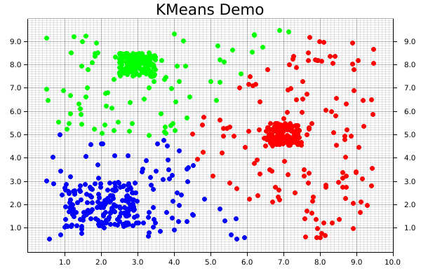

Introduction to Machine Learning with Rust
What is this book for?
This book aims to provide an accessible introduction to machine learning and data science in the Rust ecosystem. Each chapter will have the description of an algorithm, and walk through a code example from start to finish.
Who is this book for?
This book is written with two primary audiences in mind: developers who are familiar with machine learning and want to write their code Rust, and developers who are familiar with Rust and want to do some machine learning.
In both cases, we generally assume a basic level of understanding of the Rust programming language, although mastery is certainly not required! If you're brand new to the language, it's suggested to start off by reading The Rust Programming Language, then returning when you feel a little more comfortable. In particular, it's worth reviewing the sections on ownership, error handling, and functional features. Perhaps just as importantly as Rust's syntax, a familiarity with the library/crates ecosystem and documentation practices will prove very valuable. Machine learning in many cases sits near the top of the stack; especially when one is working with data, there are usually several layers of code beneath what the top one is doing. That's one of the benefits of working in Rust; these lower layers are often also written in Rust, which makes the abstraction more transparent and empowers developers to dig fearlessly into the underlying aspects of these programs.
Conversely, we don't assume an in-depth knowledge of machine learning (i.e. mathematical familiarity of the field). Some familiarity with the algorithms may be helpful, but the descriptions and code contained in here should help to build a foundation of some of these topics.
How to use this book
Each chapter's code sample is available (and the plots generated) from the code available under the examples directory, and can be run independently of the book. For example, to run the entirety of the code example for the KMeans algorithm, you would do the following:
# From repo directory
$ cargo run --release --example kmeans
An additional note
Like much of Rust, many of the libraries in this ecosystem empower people to write code that they might otherwise not feel able to write otherwise. Machine learning provides a really interesting and useful set of tools. That is a great benefit! However, as the saying goes, with great power comes great responsibility. This means that it is the responsibility of each developer individually, and the community as a whole, to make sure that the code we write is not being used in harmful ways and make ethical decisions surrounding our work.
As a start, we suggest making yourself familiar with some of the resources that have been collected by the Institute for Ethical Machine Learning here.
Getting Started With The K-Means Clustering Algorithm
What is KMeans?
KMeans is one of the most common clustering algorithms, where a set of unlabeled data points are grouped into a set of clusters such that each data point is part of the cluster with the centroid nearest to itself.
The centroid of a cluster is calculated as the mean, or average, of the points assigned to that cluster. The linfa crate provides an implementation of the standard algorithm for this process, known as "Lloyd's algorithm."
KMeans is_iterative_, meaning that it progressively refines the points assigned to each cluster, and therefore a new centroid for that cluster (leading to new points being assigned to it) during each successive iteration. At a high level, there are three main steps to the algorithm:
- Initialization: Choose our initial set of centroids--this can happen randomly or be set by the user, but the number of clusters/centroids is always defined ahead of time in KMeans
- Assignment: Assign each observation to the nearest cluster (minimum distance between the observation and the cluster's centroid);
- Update: Recompute the centroid of each cluster.
Steps 2 and 3 are repeated until the location of the centroid for each cluster converges.
Using KMeans with linfa-clustering
First, we'll start off by importing the dependencies, which can be found in the Cargo.toml file in the code/ folder. Note that we need to include both the overall linfa crate, which will provide some of the structuring, as well as the actual KMeans algorithm from the linfa-clustering crate.
#![allow(unused)] fn main() { // Import the linfa prelude and KMeans algorithm use linfa::prelude::*; use linfa_clustering::KMeans; use linfa_nn::distance::L2Dist; // We'll build our dataset on our own using ndarray and rand use ndarray::prelude::*; use rand::prelude::*; // Import the plotters crate to create the scatter plot use plotters::prelude::*; }
After importing the dependencies, we'll start off by creating a set of data points that we want to cluster. This data could be imported from somewhere else through a library like ndarray_csv or polars, but we'll create it manually here for this example. The most important thing is that we end up with an ndarray Array2<f32> data structure.
For this dataset, we'll get started with a few squares filled with random points, in which each square is defined by a center point, edge length, number of points contained within it's boundaries. Each of those squares should end up having a high-enough density to be the center point of one of our clusters. We'll also create a large, sparse set of points covering all over them to act as background noise, which will help to visually demonstrate how disparate points get assigned to clusters.
Since each of these squares is being created individually, we'll then need to consolidate them along (along the y-axis) by using the ndarray::stack() function, which concatenates arrays along the specified axis.
#![allow(unused)] fn main() { let square_1: Array2<f32> = create_square([7.0, 5.0], 1.0, 150); // Cluster 1 let square_2: Array2<f32> = create_square([2.0, 2.0], 2.0, 150); // Cluster 2 let square_3: Array2<f32> = create_square([3.0, 8.0], 1.0, 150); // Cluster 3 let square_4: Array2<f32> = create_square([5.0, 5.0], 9.0, 300); // A bunch of noise across them all let data: Array2<f32> = ndarray::concatenate( Axis(0), &[ square_1.view(), square_2.view(), square_3.view(), square_4.view(), ], ) .expect("An error occurred while stacking the dataset"); }
Now that we have our data, we'll convert it into the form that Linfa uses for training and predicting model, the Dataset type.
In order to actually build the KMeans algorithm, there are two additional things that we'll need: the number of clusters we're expecting, and a random number generator (RNG). While it is possible to manually define the starting location of each centroid, we often use KMeans in situations where we don't know much about the data ahead of time, so randomly creating them can work just as well. This represents one of the trade-offs of using KMeans; it will always converge towards a minima, it's just not guaranteed that is will be a global minima.
Using these variables, we can build our model, and set a few additional parameters that may be useful along the way. In this case, those parameters are the maximum number of iterations that we'll allow before stopping, and the tolerance in terms of distance between each iteration that we'll allow before considering our fit to have converged. Finally, we'll run the fit() method against the dataset.
#![allow(unused)] fn main() { let dataset = DatasetBase::from(data); let rng = thread_rng(); // Random number generator let n_clusters = 3; let model = KMeans::params_with(n_clusters, rng, L2Dist) .max_n_iterations(200) .tolerance(1e-5) .fit(&dataset) .expect("Error while fitting KMeans to the dataset"); }
In order to actually get the cluster assignments for the original dataset, however, we'll need to actually run the model against the dataset it was trained on. This may seem a little counter-intuitive, but this two-step process of fit() and predict() helps to make the overall modelling system more flexible.
Calling the predict() method will also convert the dataset variable from a single Array2<f32> in a pair of arrays (records, targets): (Array2<f32>, Array1<f32>).
#![allow(unused)] fn main() { let dataset = model.predict(dataset); println!("{:?}", dataset.records.shape()); println!("{:?}", dataset.targets.shape()); }
At this point, we have all of our points and their assigned clusters, and we can move onto doing some data visualization! The initial step in that process is setting up the backend, of which the plotters library has several. We'll use the BitMapBackend, which will save the chart we create into a .png image file with a specified name and size.
A ChartBuilder data structure will be laid on top of the backend, which will actually be responsible for the placing of chart elements like labels, margins, grids, etc. which are all defined by the user. In this case, we want to graph on a two-dimensional Cartesian plane, with both the x- and y-axes set to a range of [0..10].
#![allow(unused)] fn main() { let root = BitMapBackend::new("target/kmeans.png", (600, 400)).into_drawing_area(); root.fill(&WHITE).unwrap(); let x_lim = 0.0..10.0f32; let y_lim = 0.0..10.0f32; let mut ctx = ChartBuilder::on(&root) .set_label_area_size(LabelAreaPosition::Left, 40) // Put in some margins .set_label_area_size(LabelAreaPosition::Right, 40) .set_label_area_size(LabelAreaPosition::Bottom, 40) .caption("KMeans Demo", ("sans-serif", 25)) // Set a caption and font .build_cartesian_2d(x_lim, y_lim) .expect("Couldn't build our ChartBuilder"); }
The final part of this process consists of actually adding in the mesh, and setting up an area for plotting each of the individual data points.
#![allow(unused)] fn main() { ctx.configure_mesh().draw().unwrap(); let root_area = ctx.plotting_area(); }
Before starting to plot, however, we want to make sure that the data we're going to plot is the right shape; a two-dimensional dataset with two columns. Fortunately, a simple helper function has been written to double-check if that is true.
#![allow(unused)] fn main() { // check_array_for_plotting(dataset: &Array2<f32>) -> bool {} check_array_for_plotting(&dataset.records); // Panics if that's not true }
We're now ready to begin plotting! It is possible to plot elements as part of a series, but it's easy (and still quite fast) to do each individually. First, the coordinates from each element get pulled from the dataset.records array. Those coordinates are then used to create a dot, where we pattern-match on the point's assigned cluster from dataset.targets to choose the color.
Notice that the pattern-matching here is exhaustive! For KMeans, this isn't important, because each point is automatically assigned to a cluster. However, that's not necessarily true for all clustering algorithms, where some less-important data points can be left behind, so it's good practice to make sure that we consider that possibility. Finally, we'll actually draw the chart element we created using that information onto the chart area.
#![allow(unused)] fn main() { for i in 0..dataset.records.shape()[0] { let coordinates = dataset.records.slice(s![i, 0..2]); let point = match dataset.targets[i] { 0 => Circle::new( (coordinates[0], coordinates[1]), 3, ShapeStyle::from(&RED).filled(), ), 1 => Circle::new( (coordinates[0], coordinates[1]), 3, ShapeStyle::from(&GREEN).filled(), ), 2 => Circle::new( (coordinates[0], coordinates[1]), 3, ShapeStyle::from(&BLUE).filled(), ), // Making sure our pattern-matching is exhaustive _ => Circle::new( (coordinates[0], coordinates[1]), 3, ShapeStyle::from(&BLACK).filled(), ), }; root_area .draw(&point) .expect("An error occurred while drawing the point!"); } }
And that's it! Note that there's not separate step for saving the final product, since that's automatically taken care of by our backend. The final visualization of the clusters created by the KMeans algorithm will look like the following:

Using DBSCAN with linfa-clustering
What is the DBSCAN algorithm?
The DBSCAN algorithm (Density-Based Spatial Clustering Algorithm with Noise) was originally published in 1996, and has since become one of the most popular and well-known clustering algorithms available.
Comparison with KMeans
Before getting into the code, let's examine how these differences in approach plays out on different types of data. In the images below, both the DBSCAN and KMeans algorithms were applied to the same dataset. The KMeans algorithm was manually set to find 3 clusters (remember, DBSCAN automatically calculates the number of clusters based on the provided parameters).
This example1 demonstrates two of the major strengths of DBSCAN over an algorithm like KMeans; it is able to automatically detect the number of clusters that meet the set of given parameters. Keep in mind that this doesn't mean DBSCAN require less information about the dataset, but rather that the information it does require differs from an algorithm like KMeans.
DBSCAN does a great job at finding clustering that are spatially contiguous, but not necessarily confined to single region. This is where the "and Noise" part of the algorithm's name comes in. Especially in real-world data, there's often data that won't fit well into a given cluster. These can be outliers or points that don't demonstrate good alignment with any of the main clusters. DBSCAN doesn't require that they do. Instead, it will simply give them a cluster label of None (in our example, these are graphically the black points). However, DBSCAN does a good job at analyzing existing information, it doesn't predict new data, which is one of its main drawbacks
Comparatively, KMeans will take into account each point in the dataset, which means outliers can negatively affect the local optimal location for a given cluster's centroid in order to accommodate them. Euclidean space is linear, which means that small changes in the data result in proportionately small changes to the position of the centroids. This is problematic when there are outliers in the data.
Using DSBCAN with linfa
Compared to
#![allow(unused)] fn main() { // Import the linfa prelude and KMeans algorithm use linfa::prelude::*; use linfa_clustering::Dbscan; // We'll build our dataset on our own using ndarray and rand use ndarray::prelude::*; // Import the plotters crate to create the scatter plot use plotters::prelude::*; }
Instead of having a several higher-density clusters different areas, we'll take advantage of DBSCAN's ability to follow spatially-contiguous non-localized clusters by building our data out of both filled and hollow circles, with some random noise tossed in as well. The end goal will be to re-find each of these clusters, and exclude some of the noise!
#![allow(unused)] fn main() { // The goal is to be able to find each of these as distinct, and exclude some of the noise let circle: Array2<f32> = create_circle([5.0, 5.0], 1.0, 100); // Cluster 0 let donut_1: Array2<f32> = create_hollow_circle([5.0, 5.0], [2.0, 3.0], 400); // Cluster 1 let donut_2: Array2<f32> = create_hollow_circle([5.0, 5.0], [4.5, 4.75], 1000); // Cluster 2 let noise: Array2<f32> = create_square([5.0, 5.0], 10.0, 100); // Random noise let data = ndarray::concatenate( Axis(0), &[circle.view(), donut_1.view(), donut_2.view(), noise.view()], ) .expect("An error occurred while stacking the dataset"); }
Compared to linfa's KMeans algorithm, the DBSCAN implementation is able to operate directly on a ndarray Array2 data structure, so there's no need to convert it into the linfa-native Dataset type first. It's also worth pointing out that choosing the chosen parameters often take some experimentation and tuning before they produce results that actually make sense. This is one of the areas where data visualization can be really valuable; it is helpful in developing some spatial intuition about your data set and understand how your choice of hyperparameters will affect the results produced by the algorithm.
#![allow(unused)] fn main() { // Compared to linfa's KMeans algorithm, the DBSCAN implementation can operate // directly on an ndarray `Array2` data structure, so there's no need to convert it // into the linfa-native `Dataset` first. let min_points = 20; let clusters = Dbscan::params(min_points) .tolerance(0.6) .transform(&data) .unwrap(); println!("{:#?}", clusters); }
We'll skip over setting up ChartBuilder struct and drawing areas from the plotters crate, since it's exactly the same as in the KMeans example.
Remember how we mentioned DBSCAN is an algorithm that can exclude noise? That's particularly important for the pattern-matching in this case, since we're almost guaranteed to end up with some values that don't fit nicely into any of our expected clusters. Since we generated an artificial dataset, we know the number of clusters that should be generated, and where they're located. However, that won't always be the case. In that situation, we could instead examine the number of clusters afterwards, create a colormap using custom RGB colors which matches the highest number of clusters, and plot it that way.
#![allow(unused)] fn main() { for i in 0..data.shape()[0] { let coordinates = data.slice(s![i, 0..2]); let point = match clusters[i] { Some(0) => Circle::new( (coordinates[0], coordinates[1]), 3, ShapeStyle::from(&RED).filled(), ), Some(1) => Circle::new( (coordinates[0], coordinates[1]), 3, ShapeStyle::from(&GREEN).filled(), ), Some(2) => Circle::new( (coordinates[0], coordinates[1]), 3, ShapeStyle::from(&BLUE).filled(), ), // Making sure our pattern-matching is exhaustive // Note that we can define a custom color using RGB _ => Circle::new( (coordinates[0], coordinates[1]), 3, ShapeStyle::from(&RGBColor(255, 255, 255)).filled(), ), }; root_area .draw(&point) .expect("An error occurred while drawing the point!"); } }
As a result, we then get the following chart, where each cluster is uniquely identified, and some of the random noise associated with the dataset is discarded.

This code for this comparison is actually separate from the main DBSCAN example. It can be found at examples/clustering_comparison.rs.
Linear Regression
Now that we've gotten some clustering under our belt, let's take a look at one of the other common data science tasks: linear regression on two-dimensional data. This example includes code for both calculating the linear equation using linfa, as well as code for plotting both the data and line on a single graph using the plotters library.
Per usual, we'll create some data using one of our built-in functions. This simply creates an Array2<f64> with two columns, one of which will be our x-axis and the other our y-axis. We're generating this artificially, but remember, we could get this from a real data source like processing a CSV file or reading in values from a sensor.
#![allow(unused)] fn main() { let array: Array2<f64> = linfa_book::create_curve(1.0, 1.0, 0.0, 50, [0.0, 7.0]); }
Now that we have the initial data, let's break that down into something that we can use for our regression; a data array and a target array. Fortunately, this is pretty simple with the slice() and column() functions provided by ndarray. We're also going to want to grab the maximum values for our arrays (and round them up to the nearest integer using the ceil() function) to be used for plotting those values a little bit later.
#![allow(unused)] fn main() { // Converting from an array to a Linfa Dataset can be the trickiest part of this process let (data, targets) = ( array.slice(s![.., 0..1]).to_owned(), array.column(1).to_owned(), ); let x_max = data.max().unwrap().ceil(); let y_max = targets.max().unwrap().ceil(); }
Once the data is formatted, we'll be able to nicely add it into the linfa-native Dataset format, along with the appropriate feature names. If you're running into funky error related to array shapes in your code, this section and the step before (where we create our data and target data structures) are ones you should double-check; dynamically-shaped arrays as found in most scientific computing libraries, Rust-based or not, can be tricky.
In fact, as you may have experienced yourself, it's very common that the pre-processing steps of many data science problems (filtering, formatting, distributing, etc.) are actually the most complicated and often where a little bit of additional effort can save you a lot of trouble down the road.
#![allow(unused)] fn main() { let dataset = Dataset::new(data, targets).with_feature_names(vec!["x", "y"]); }
However, now we have our data formatted properly and in the Dataset format, actually running the regression is pretty simple; we only need to create our LinearRegression object and fit it to the dataset.
#![allow(unused)] fn main() { let lin_reg = LinearRegression::new(); let model = lin_reg.fit(&dataset).unwrap(); }
We're going to leave out a little bit of the boilerplate (check the repository for the full example code), but you'll notice that when we set up our chart context, we'll use the rounded maximum values in both the data and target arrays to set our maximum chart range (as mentioned earlier).
#![allow(unused)] fn main() { let mut ctx = ChartBuilder::on(&root_area) .set_label_area_size(LabelAreaPosition::Left, 40) .set_label_area_size(LabelAreaPosition::Bottom, 40) .caption("Legend", ("sans-serif", 40)) .caption("Linear Regression", ("sans-serif", 40)) .build_cartesian_2d(0.0..x_max + 1.0, 0.0..y_max + 1.0) .unwrap(); }
Now that the chart is good to go, we'll start off by drawing our best fit line using the linear equation we derived above. We can't just supply the equation and let the plotting figure it out; instead, what we'll do it create series of points that exactly match this equation at regular intervals, and connect those with a smooth, continuous line. If this seems clunky, just remember: we have a nice, smooth solution this time around, but that might not always be the case. In the future, we might want more complicated polynomial, or even a discontinuous function. This approach (smoothly connecting an arbitrary set of points) is applicable to a wide variety of potential applications.
Once we add our line, we'll also want a nice label, with a set level of precision; this will be added to the legend once our chart is complete.
#![allow(unused)] fn main() { let mut line_points = Vec::with_capacity(2); for i in (0..8i32).step_by(1) { line_points.push((i as f64, (i as f64 * model.params()[0]) + model.intercept())); } // We can configure the rounded precision of our result here let precision = 2; let label = format!( "y = {:.2$}x + {:.2}", model.params()[0], model.intercept(), precision ); ctx.draw_series(LineSeries::new(line_points, &BLACK)) .unwrap() .label(&label); }
Now that the line is present, we can add our points; this should look very familiar, as we're functionally doing something similar to the clustering examples we've already put together.
#![allow(unused)] fn main() { let num_points = array.shape()[0]; let mut points = Vec::with_capacity(num_points); for i in 0..array.shape()[0] { let point = (array[[i, 0]], array[[i, 1]]); let circle = Circle::new(point, 5, &RED); points.push(circle); } ctx.draw_series(points).unwrap(); }
Finally, we'll configure the labels that we'll assigned to each of the series that we've drawn on the chart.
#![allow(unused)] fn main() { ctx.configure_series_labels() .border_style(&BLACK) .background_style(&WHITE.mix(0.8)) .draw() .unwrap(); }
And we're done (ooooh, ahhhh, pretty)!